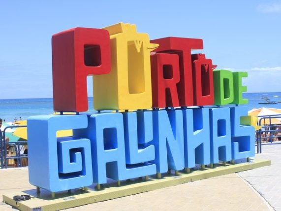
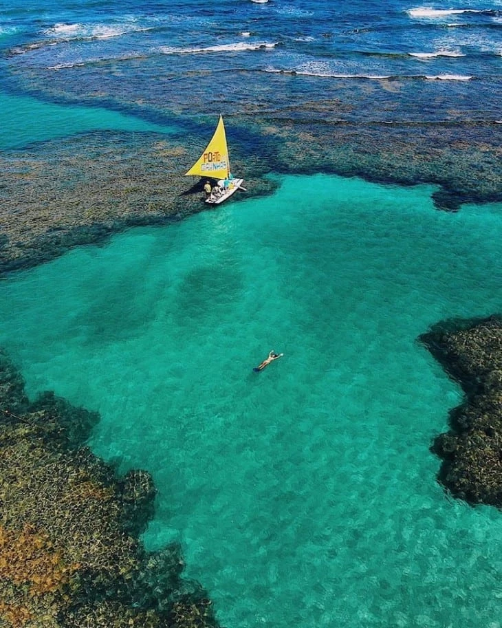
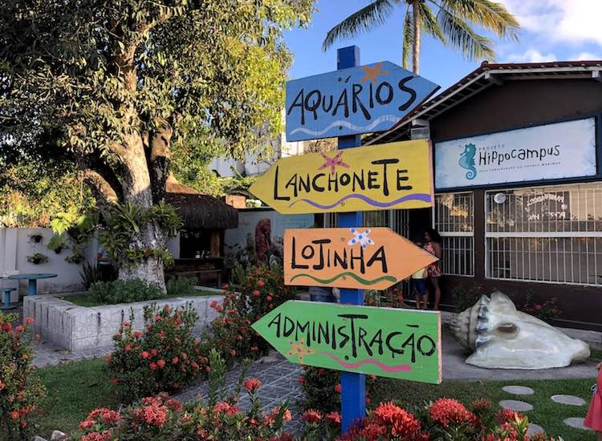
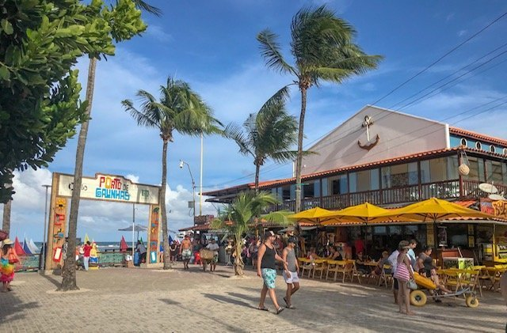

Ipojuca - Pernambuco
A cidade de Ipojuca em Pernambuco é muito famosa principalmente pelas praias e cenários naturais. Especialmente Porto de Galinhas, que é uma das praias mais populares do Brasil, e atrai turistas de todo o mundo.
Porto de Galinhas
A praia de Porto de Galinhas é uma das principais Praias de Ipojuca, famosa por suas piscinas naturais de águas cristalinas, onde os visitantes podem fazer snorkel e nadar com peixes coloridos. A praia também oferece uma excelente infraestrutura com restaurantes, bares e lojas.
Principais atrações
Piscinas naturais
Na maré baixa os recifes de corais criam piscinas rasas ideais para observar os peixes, corais e outros animais marinhos. Uma das formas mais populares de acesso é por meio de passeios de jangada, onde os jangadeiros levamos visitenates para passeios guiados e fornecem equipamentos de snorkel para a visualização subaquática
Projeto Hippocampus
Projeto de preservação que se dedica a preservação de cavalos marinhos. e Reune diversos aquários não só com os cavalos marinhos mas tambem com outros tipos de animais marinhos.
Vila de Porto de Galinhas
É um centro de atividade turística onde existem uma variedade de restaurantes, bares e lojas.
